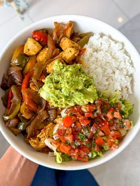

Bowl de Pollo y Arroz Post-Cardio

Este bowl es lo que comes cuando ya hiciste el cardio del día y necesitas recargar bien sin caer en otra bomba calórica. En esta receta, combinamos pechuga de pollo jugosa a la plancha, arroz jazmín esponjoso y brócoli al vapor, creando un plato completo que te da energía limpia para seguir tu día. Además, tiene más de 40g de proteína y se hace en 15 minutos.